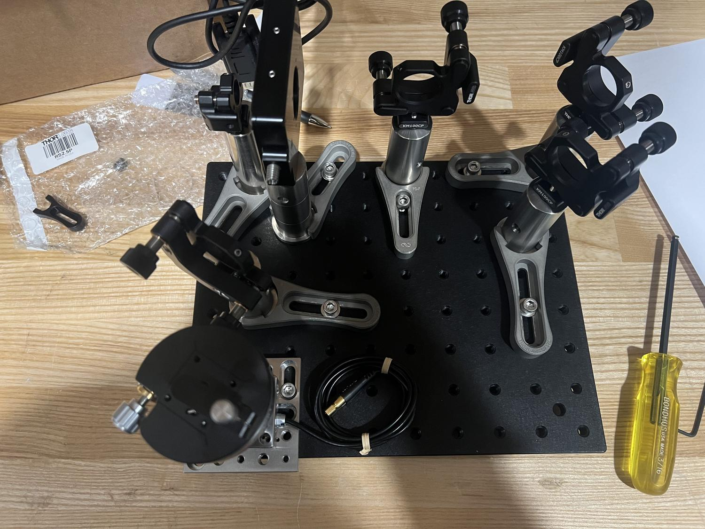
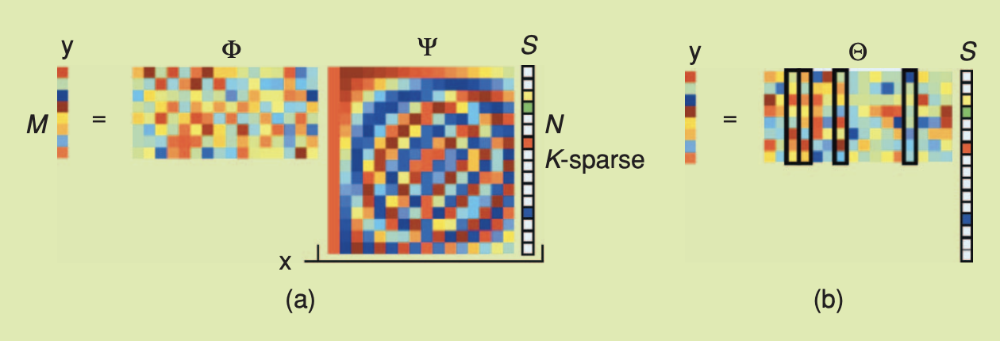

Basov Lab
Hardware and computational optimizations for nanoscale spectroscopy.

In the Basov Laboratory, the excitation field for a given sample is not always known. Measuring the field enhanced by a sample allows for a direct study of material properties, such as dispersion. However, Near-Field (NF) measurements often suffer from long integration times due to extremely low photon levels.
To solve this, I approached the problem from two distinct angles: engineering a highly tunable physical monochromator, and developing a compressed sensing algorithm to drastically reduce the required data acquisition time.

02. Custom Monochromator
Detailed measurements with high spectral resolution traditionally demand lengthy acquisition times. To introduce flexibility, I designed a compact monochromator system utilizing a diffraction grating and an adjustable slit.
Built entirely on a 10x12-inch optical breadboard, this custom configuration disperses light linearly and allows researchers to tune the resolution from 1 nm/mm up to 10 nm/mm. This enables rapid preliminary scans while preserving the ability to conduct ultra-fine measurements when needed.
Read the full mathematical and design write-up →Resolution: 1 to 10 nm/mm Footprint: 10x12 inches

03. Compressed Sensing (CS)
To computationally bypass physical integration limits, I developed a sensing method inspired by data compression protocols. By transforming the visual information into a different mathematical basis where the data is sparse, we can drop a vast majority of the coefficients without a sensible loss in image quality.
Compressed Sensing reverses this logic: by sampling less data initially (forming the measurement matrix), we can reconstruct the full system by solving a system of equations in the transformed space. I successfully implemented a binomial sampling matrix on a Fourier basis, and am currently refining the reconstruction process to yield even higher resolution imaging.
Binomial Sampling Fourier Basis